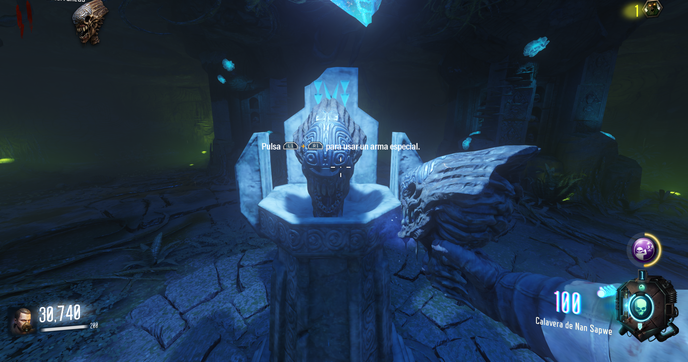
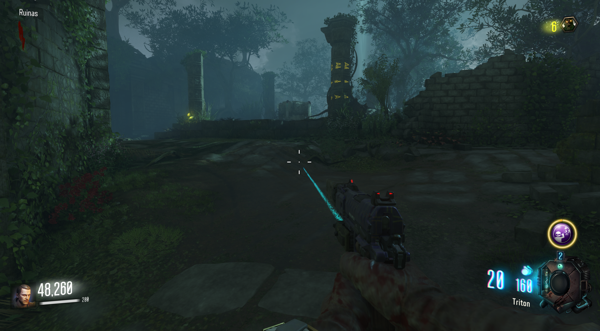
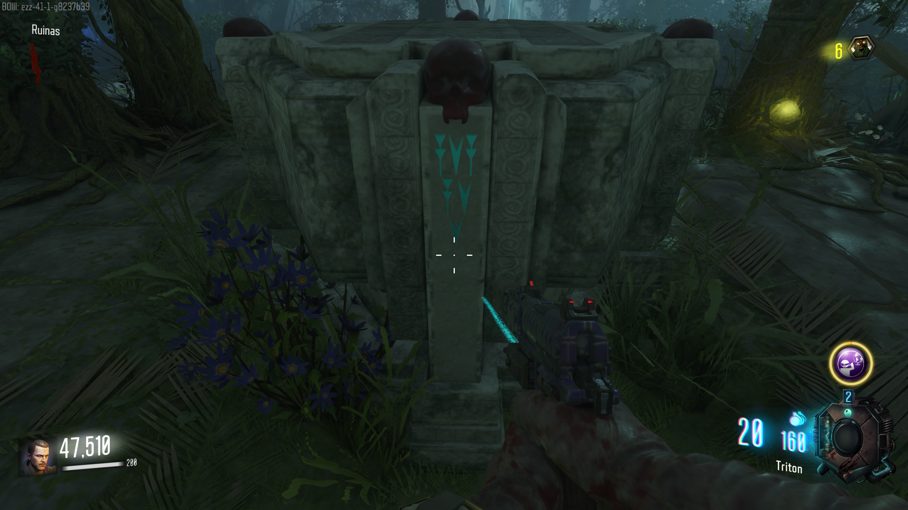
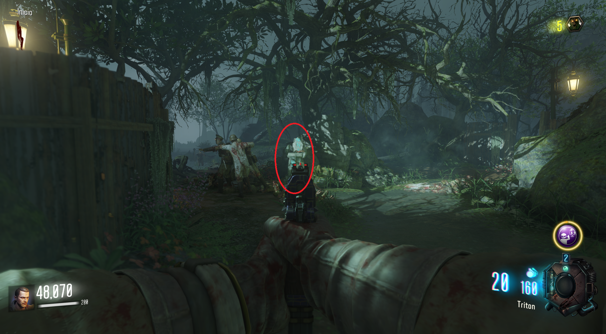
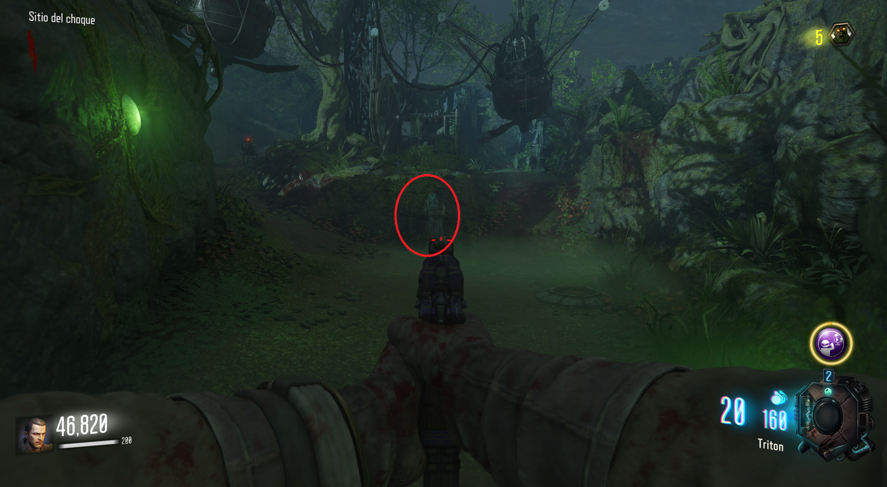
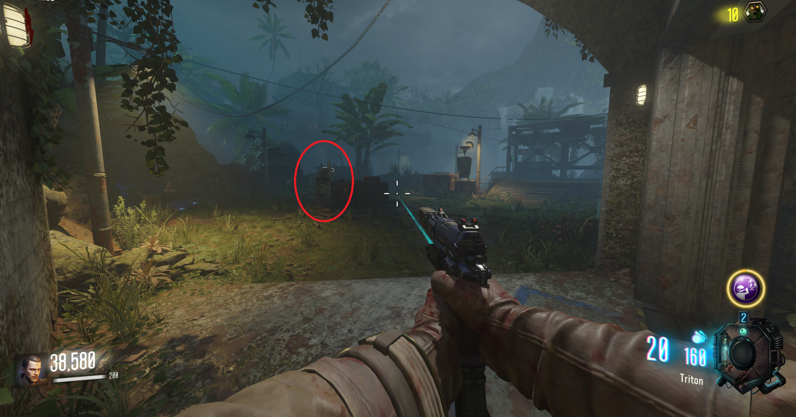
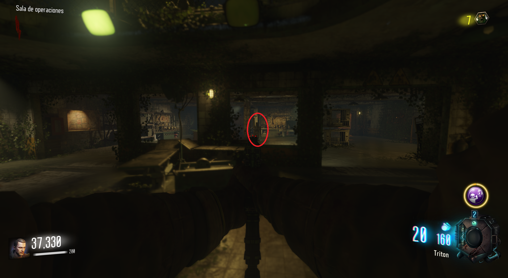
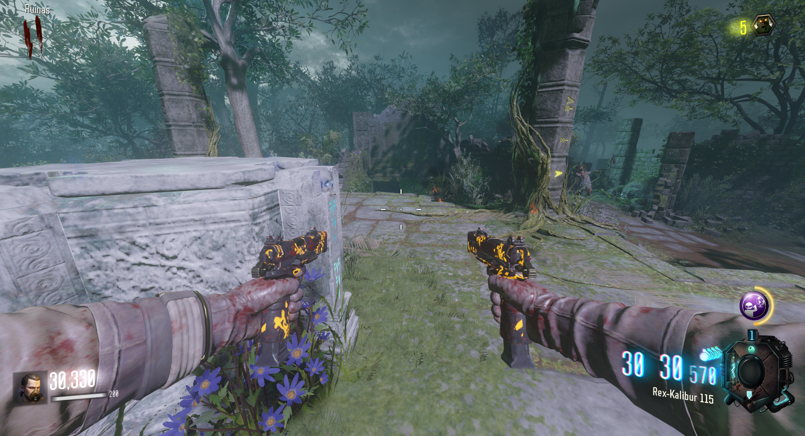
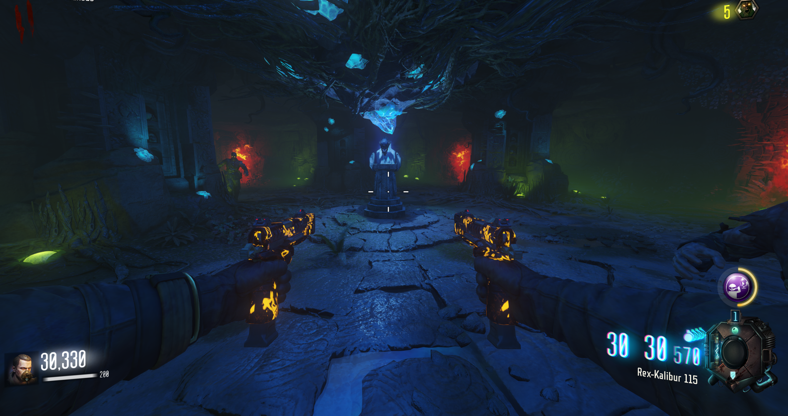
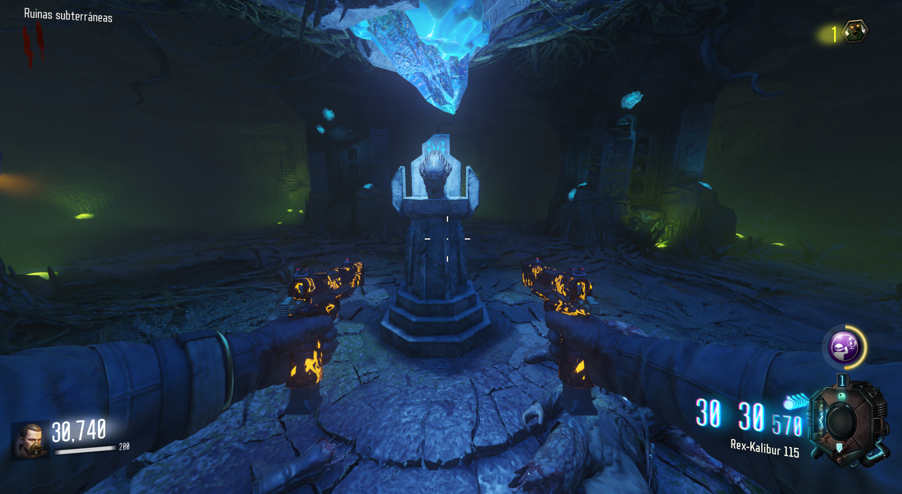

Calavera de Nan Sapwe (Zetzubou No Shima)

Siguiendo el camino a la derecha del spawn, llegaremos a la zona del altar de las calaveras.

En medio, veremos 4 calaveras con símbolos.

Localizaciones de los pedestales:




Retornar calaveras y ritual: Una vez devolvamos las calaveras al altar. Una puerta se abrirá y comenzará un ritual. Mataremos a los guardianes que aparezcan, recargando la calavera.


Una vez finalizado podremos recoger la calavera de Nan Sapwe.
